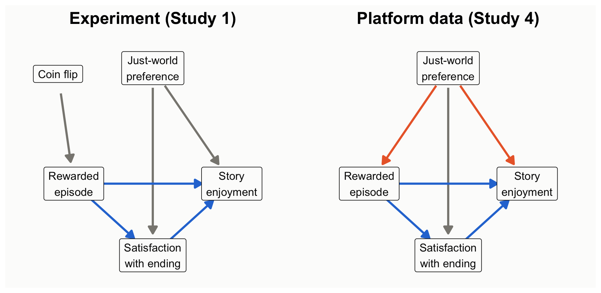
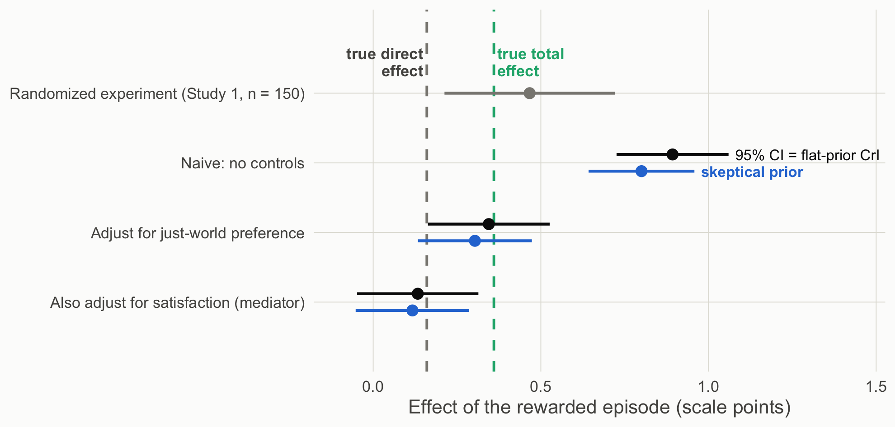

Every result in the earlier scenes came from a randomized experiment. A coin flip decided who read the rewarded ending and who read the punished one, so the two groups differed, on average, only in the ending. That is why those scenes could argue about how much evidence there was and how to phrase it, but never about what caused the difference. The design, not the analysis, is what licensed reading the difference as an effect of the ending.
Much of communication research cannot randomize. People choose what they watch, read, and share, and those choices are often exactly what we want to study. This scene asks what happens to both inference machines when the design no longer does the causal work. The short answer is in the title. A p value, a posterior, and a Bayes factor all summarize what the data say about an association; none of them can say whether that association is the causal effect.
In the course’s chain (Explanation → Prediction → Design & data generation → Analysis → Inference), the earlier scenes worked in the last two links. This scene steps back to the middle link and shows why it decides what the last one can mean.
Study 4: the same question, but viewers choose
Study 4 asks Study 1’s question with data a streaming platform already collects. The platform offers two versions of the same episode: one where the character’s good deed is rewarded (the rewarded episode) and one where it is punished. Viewers choose which version to watch, and afterward they rate how much they enjoyed it.
The choice is the problem. Some viewers have a stable preference for stories where good is rewarded (call it just-world preference). They are more likely to pick the rewarded episode, and they tend to enjoy stories more whichever version they watch. So the ending and the preference arrive together, and comparing the two groups of viewers mixes the effect of the ending with the effect of who chose it.
One more piece matters for deciding what to control for. The ending affects enjoyment partly through satisfaction with the ending (did the character get what they deserved?). That path is part of the effect we want to estimate, not a nuisance to remove.
Predict first
The platform has 600 viewers, twice as many as Study 1’s largest sample (300). Will its estimate be closer to the truth than the experiment’s? Which variables would you control for?
Drawing the design
Rohrer (2018) offers a tool for reasoning about this before touching the data: draw a causal diagram (a DAG) of what causes what, then read off which variables to adjust for and which to leave alone. The diagram is a theory of the design, stated clearly enough that readers can dispute it.
Explainer: DAG vocabulary (Rohrer, 2018)
DAG (directed acyclic graph): a diagram of assumed causal relationships. Arrows point from cause to effect, and no path loops back on itself.
Confounder: a common cause of the exposure and the outcome (here, just-world preference). It creates a non-causal association, a back-door path, that has to be blocked, for example by adjusting for the confounder.
Mediator: a variable on the causal path from exposure to outcome (here, satisfaction with the ending). Adjusting for it removes part of the effect you are trying to estimate.
Collider: a variable caused by two others. Adjusting for it, or selecting on it, creates a spurious association. Your turn question 1 explores this.
Estimand: the quantity you are trying to estimate. The total effect includes every path from exposure to outcome; the direct effect excludes the path through the mediator.
Code
draw_dag <-function(nodes, edges, title) { e <-merge(merge(edges, nodes, by.x ="from", by.y ="id"), nodes, by.x ="to", by.y ="id", suffixes =c("", "_to")) shrink <-function(x0, y0, x1, y1, a =0.17, b =0.19) { dx <- x1 - x0; dy <- y1 - y0; L <-sqrt(dx^2+ dy^2)data.frame(sx = x0 + dx * a / L, sy = y0 + dy * a / L, ex = x1 - dx * b / L, ey = y1 - dy * b / L) } seg <-cbind(e, shrink(e$x, e$y, e$x_to, e$y_to))ggplot() +geom_segment(data = seg, aes(x = sx, y = sy, xend = ex, yend = ey, color = type), linewidth =1.1,arrow =arrow(length =unit(0.3, "cm"), type ="closed")) +geom_label(data = nodes, aes(x, y, label = label), size =4.2, label.size =0.3,label.padding =unit(0.35, "lines"), fill ="#fcfcfb", color = pal[["ink"]]) +scale_color_manual(values =c(causal = pal[["blue"]], confound = pal[["orange"]], other = pal[["gray"]])) +coord_cartesian(xlim =c(-0.35, 1.35), ylim =c(-0.8, 1.25)) +labs(title = title) +theme_void(base_size =15) +theme(legend.position ="none", plot.title =element_text(face ="bold", hjust =0.5),plot.background =element_rect(fill ="#fcfcfb", color =NA))}nodes <-data.frame(id =c("jw", "x", "y", "m", "coin"),label =c("Just-world\npreference", "Rewarded\nepisode", "Story\nenjoyment", "Satisfaction\nwith ending", "Coin flip"),x =c(0.5, 0, 1, 0.5, -0.1), y =c(1, 0, 0, -0.62, 0.95))exp_edges <-data.frame(from =c("coin", "jw", "jw", "x", "x", "m"), to =c("x", "y", "m", "y", "m", "y"),type =c("other", "other", "other", "causal", "causal", "causal"))obs_edges <-data.frame(from =c("jw", "jw", "jw", "x", "x", "m"), to =c("x", "y", "m", "y", "m", "y"),type =c("confound", "confound", "other", "causal", "causal", "causal"))draw_dag(nodes, exp_edges, "Experiment (Study 1)") +draw_dag(nodes[nodes$id !="coin", ], obs_edges, "Platform data (Study 4)")

Figure 1: Two designs for the same question. Left: random assignment cuts the arrow from just-world preference into the condition. Right: self-selection leaves a back-door path through just-world preference.
How to read this figure
Boxes are variables; arrows are causal effects.
Blue arrows are the effect we want: the episode’s effect on enjoyment, both directly and through satisfaction with the ending.
Orange arrows form the back-door path: just-world preference influences both which episode people choose and how much they enjoy it.
In the experiment, a coin flip decides the episode, so no arrow points from just-world preference into it and the back door is closed.
Three analyses of the platform data
Now analyze the platform data three ways, changing only what the model controls for: nothing (the naive comparison), the confounder (just-world preference), or the confounder plus the mediator (satisfaction with the ending). Each model gets both treatments: a frequentist estimate with its 95% CI and p value, and Bayesian posteriors (flat and skeptical priors) with a Bayes factor. Because the data are simulated, we know the right answer, and the figure below marks it.
obs <-read.csv("data/story_observational.csv")models <-list("Naive: no controls"= enjoyment ~ chose_rewarded,"Adjust for just-world preference"= enjoyment ~ chose_rewarded + just_world,"Also adjust for satisfaction (mediator)"= enjoyment ~ chose_rewarded + just_world + satisfaction)fit_both <-function(f) { m <-lm(f, data = obs) est <-coef(m)[["chose_rewarded"]]; se <-sqrt(vcov(m)["chose_rewarded", "chose_rewarded"]) df <- m$df.residual; ci <- est +c(-1, 1) *qt(.975, df) * se# Bayesian: flat prior -> posterior is a t centered on the OLS estimate# Skeptical prior Normal(0, 0.25) on the coefficient (normal approximation) sk <-update_normal(0, 0.25, est, se)# Bayes factor for including chose_rewarded, holding the other predictors.# lmBF treats the 0/1 predictor as continuous with its default prior scale# (sqrt(2)/4), a different default from the t-tests in Scenes 1-3. full <-lmBF(f, data = obs) rest <-all.vars(f)[-(1:2)] bf <-if (length(rest) ==0) extractBF(full)$bf elseextractBF(full /lmBF(reformulate(rest, "enjoyment"), data = obs))$bfdata.frame(est = est, lo = ci[1], hi = ci[2], p =2*pt(-abs(est / se), df),P_pos_flat =pt(est / se, df), sk_mean = sk[["mean"]],sk_lo = sk[["mean"]] -1.96* sk[["sd"]], sk_hi = sk[["mean"]] +1.96* sk[["sd"]], bf10 = bf)}res5 <-do.call(rbind, lapply(models, fit_both)); res5$model <-names(models)knitr::kable(data.frame(Model = res5$model,`Estimate [95% CI = flat-prior CrI]`=sprintf("%.2f [%.2f, %.2f]", res5$est, res5$lo, res5$hi),p =fmt_p(res5$p), BF10 =fmt_bf(res5$bf10),`Skeptical-prior posterior`=sprintf("%.2f [%.2f, %.2f]", res5$sk_mean, res5$sk_lo, res5$sk_hi),check.names =FALSE), align ="lcccc")
Model
Estimate [95% CI = flat-prior CrI]
p
BF10
Skeptical-prior posterior
Naive: no controls
0.89 [0.73, 1.06]
< .001
3.9e+20
0.80 [0.64, 0.96]
Adjust for just-world preference
0.34 [0.16, 0.53]
< .001
65
0.30 [0.13, 0.47]
Also adjust for satisfaction (mediator)
0.13 [-0.05, 0.31]
.149
0.22
0.12 [-0.05, 0.29]
Code
s150 <-two_group(read.csv("data/story_n150.csv")) # the randomized experiment, for comparisoncp <- res5; cp$model <-factor(cp$model, levels =rev(names(models)))exp_row <-data.frame(model ="Randomized experiment (Study 1, n = 150)", est = s150$diff, lo = s150$ci[1], hi = s150$ci[2])cp_levels <-c(rev(names(models)), exp_row$model)cp$model <-factor(cp$model, levels = cp_levels); exp_row$model <-factor(exp_row$model, levels = cp_levels)ggplot(cp, aes(y = model)) +geom_vline(xintercept =0.36, linetype ="dashed", color = pal[["aqua"]], linewidth =0.9) +geom_vline(xintercept =0.16, linetype ="dashed", color = pal[["gray"]], linewidth =0.9) +annotate("text", x =0.37, y =4.45, label ="true total\neffect", hjust =0, color = pal[["aqua"]], size =4, fontface ="bold", lineheight =0.9) +annotate("text", x =0.15, y =4.45, label ="true direct\neffect", hjust =1, color = pal[["ink2"]], size =4, fontface ="bold", lineheight =0.9) +geom_errorbarh(aes(xmin = lo, xmax = hi), height =0, linewidth =1, color = pal[["ink"]],position =position_nudge(y =0.12)) +geom_point(aes(x = est), size =3.4, color = pal[["ink"]], position =position_nudge(y =0.12)) +geom_errorbarh(aes(xmin = sk_lo, xmax = sk_hi), height =0, linewidth =1, color = pal[["blue"]],position =position_nudge(y =-0.12)) +geom_point(aes(x = sk_mean), size =3.4, color = pal[["blue"]], position =position_nudge(y =-0.12)) +annotate("text", x = res5$hi[1] +0.02, y =3.12, label ="95% CI = flat-prior CrI", hjust =0, size =3.8, color = pal[["ink"]]) +annotate("text", x = res5$sk_hi[1] +0.02, y =2.88, label ="skeptical prior", hjust =0, size =3.8, color = pal[["blue"]], fontface ="bold") +geom_errorbarh(data = exp_row, aes(xmin = lo, xmax = hi), height =0, linewidth =1, color = pal[["gray"]]) +geom_point(data = exp_row, aes(x = est), size =3.4, color = pal[["gray"]]) +scale_y_discrete(drop =FALSE) +coord_cartesian(xlim =c(-0.1, 1.45), ylim =c(0.6, 4.6)) +labs(x ="Effect of the rewarded episode (scale points)", y =NULL) +theme_demo(14)

Figure 2: Estimates of the rewarded-episode effect under three adjustment sets. Black: 95% CI, identical to the flat-prior credible interval. Blue: posterior under a skeptical prior. Dashed lines: the true total and direct effects built into the simulation. Gray: the randomized Study 1 estimate (n = 150).
How to read this figure
Each row is one analysis of the rewarded-episode effect. The top (gray) row is the randomized experiment, for reference.
Black dots and bars are the estimate and its 95% CI, which here equals the flat-prior credible interval. Blue dots and bars are the posterior under a skeptical prior.
The dashed lines mark the truth built into the simulation: the total effect (aqua, 0.36) and the direct effect (gray, 0.16).
An interval that is narrow but far from the dashed line is precise and still wrong about the causal effect. That is the naive row.
Read the naive row carefully. With 600 viewers, every framework is confident about the wrong quantity: p < .001, an enormous Bayes factor, a narrow credible interval, and an estimate more than double the causal effect. The association is real; reading it as the causal effect is the error. A skeptical prior barely dents it. Adjusting for the confounder recovers the total effect. Adding the mediator “controls away” part of the effect you wanted and leaves only the direct path; that is a different estimand, not a more careful estimate of the same one (Rohrer, 2018; Wysocki et al., 2022).
What each framework lets you say
Both frameworks, naive model: “Viewers who chose the rewarded episode enjoyed it 0.89 points more.” True as a description. As a causal claim, it assumes no common causes of choice and enjoyment, and the measured just-world variable already shows that assumption is false.
After adjustment: “Assuming just-world preference is the only common cause, choosing the rewarded episode raised enjoyment by 0.34 points.” The assumption is now in the sentence, where readers can dispute it.
Theory-building takeaway. A p value, a Bayes factor, and a posterior all describe what the data say about a coefficient. The design and the causal diagram decide which coefficient is the causal effect. Inference frameworks operate downstream of identification.
Your turn
Add a collider: simulate posted_review <- rbinom(600, 1, plogis(-1 + 1.2 * chose_rewarded + 0.8 * (enjoyment - 4.4))) and analyze only viewers who posted. What happens to the estimate?
In the experiment, just-world preference does not cause condition. Would adjusting for it still help? (Hint: compare the width of the intervals.)
Source Code
---title: "Scene 5 · Neither machine fixes the design"---```{r}#| label: setup#| include: falsesource("R/helpers.R")suppressPackageStartupMessages({library(BayesFactor)library(patchwork)})knitr::opts_chunk$set(fig.align ="center")```## So far, the design did the causal workEvery result in the earlier scenes came from a randomized experiment. A coin flip decided who read the rewarded ending and who read the punished one, so the two groups differed, on average, only in the ending. That is why those scenes could argue about *how much* evidence there was and *how to phrase it*, but never about *what caused* the difference. The design, not the analysis, is what licensed reading the difference as an effect of the ending.Much of communication research cannot randomize. People choose what they watch, read, and share, and those choices are often exactly what we want to study. This scene asks what happens to both inference machines when the design no longer does the causal work. The short answer is in the title. A *p* value, a posterior, and a Bayes factor all summarize what the data say about an association; none of them can say whether that association is the causal effect.In the course's chain (**Explanation → Prediction → Design & data generation → Analysis → Inference**), the earlier scenes worked in the last two links. This scene steps back to the middle link and shows why it decides what the last one can mean.## Study 4: the same question, but viewers chooseStudy 4 asks Study 1's question with data a streaming platform already collects. The platform offers two versions of the same episode: one where the character's good deed is rewarded (the *rewarded episode*) and one where it is punished. Viewers **choose** which version to watch, and afterward they rate how much they enjoyed it.The choice is the problem. Some viewers have a stable preference for stories where good is rewarded (call it *just-world preference*). They are more likely to pick the rewarded episode, **and** they tend to enjoy stories more whichever version they watch. So the ending and the preference arrive together, and comparing the two groups of viewers mixes the effect of the ending with the effect of who chose it.One more piece matters for deciding what to control for. The ending affects enjoyment partly through **satisfaction with the ending** (did the character get what they deserved?). That path is part of the effect we want to estimate, not a nuisance to remove.::: {.callout-important title="Predict first"}The platform has 600 viewers, twice as many as Study 1's largest sample (300). Will its estimate be closer to the truth than the experiment's? Which variables would you control for?:::## Drawing the designRohrer (2018) offers a tool for reasoning about this before touching the data: draw a **causal diagram** (a DAG) of what causes what, then read off which variables to adjust for and which to leave alone. The diagram is a theory of the design, stated clearly enough that readers can dispute it.::: {.callout-note collapse="true" title="Explainer: DAG vocabulary (Rohrer, 2018)"}- **DAG (directed acyclic graph):** a diagram of assumed causal relationships. Arrows point from cause to effect, and no path loops back on itself.- **Confounder:** a common cause of the exposure and the outcome (here, just-world preference). It creates a non-causal association, a **back-door path**, that has to be blocked, for example by adjusting for the confounder.- **Mediator:** a variable on the causal path from exposure to outcome (here, satisfaction with the ending). Adjusting for it removes part of the effect you are trying to estimate.- **Collider:** a variable caused by two others. Adjusting for it, or selecting on it, creates a spurious association. Your turn question 1 explores this.- **Estimand:** the quantity you are trying to estimate. The **total effect** includes every path from exposure to outcome; the **direct effect** excludes the path through the mediator.:::```{r}#| label: fig-dag#| code-fold: true#| fig-height: 4.4#| fig-cap: "Two designs for the same question. Left: random assignment cuts the arrow from just-world preference into the condition. Right: self-selection leaves a back-door path through just-world preference."draw_dag <-function(nodes, edges, title) { e <-merge(merge(edges, nodes, by.x ="from", by.y ="id"), nodes, by.x ="to", by.y ="id", suffixes =c("", "_to")) shrink <-function(x0, y0, x1, y1, a =0.17, b =0.19) { dx <- x1 - x0; dy <- y1 - y0; L <-sqrt(dx^2+ dy^2)data.frame(sx = x0 + dx * a / L, sy = y0 + dy * a / L, ex = x1 - dx * b / L, ey = y1 - dy * b / L) } seg <-cbind(e, shrink(e$x, e$y, e$x_to, e$y_to))ggplot() +geom_segment(data = seg, aes(x = sx, y = sy, xend = ex, yend = ey, color = type), linewidth =1.1,arrow =arrow(length =unit(0.3, "cm"), type ="closed")) +geom_label(data = nodes, aes(x, y, label = label), size =4.2, label.size =0.3,label.padding =unit(0.35, "lines"), fill ="#fcfcfb", color = pal[["ink"]]) +scale_color_manual(values =c(causal = pal[["blue"]], confound = pal[["orange"]], other = pal[["gray"]])) +coord_cartesian(xlim =c(-0.35, 1.35), ylim =c(-0.8, 1.25)) +labs(title = title) +theme_void(base_size =15) +theme(legend.position ="none", plot.title =element_text(face ="bold", hjust =0.5),plot.background =element_rect(fill ="#fcfcfb", color =NA))}nodes <-data.frame(id =c("jw", "x", "y", "m", "coin"),label =c("Just-world\npreference", "Rewarded\nepisode", "Story\nenjoyment", "Satisfaction\nwith ending", "Coin flip"),x =c(0.5, 0, 1, 0.5, -0.1), y =c(1, 0, 0, -0.62, 0.95))exp_edges <-data.frame(from =c("coin", "jw", "jw", "x", "x", "m"), to =c("x", "y", "m", "y", "m", "y"),type =c("other", "other", "other", "causal", "causal", "causal"))obs_edges <-data.frame(from =c("jw", "jw", "jw", "x", "x", "m"), to =c("x", "y", "m", "y", "m", "y"),type =c("confound", "confound", "other", "causal", "causal", "causal"))draw_dag(nodes, exp_edges, "Experiment (Study 1)") +draw_dag(nodes[nodes$id !="coin", ], obs_edges, "Platform data (Study 4)")```::: {.callout-note appearance="simple" title="How to read this figure"}1. Boxes are variables; arrows are causal effects.2. **Blue arrows** are the effect we want: the episode's effect on enjoyment, both directly and through satisfaction with the ending.3. **Orange arrows** form the back-door path: just-world preference influences both which episode people choose and how much they enjoy it.4. **In the experiment**, a coin flip decides the episode, so no arrow points from just-world preference into it and the back door is closed.:::## Three analyses of the platform dataNow analyze the platform data three ways, changing only what the model controls for: nothing (the naive comparison), the confounder (just-world preference), or the confounder plus the mediator (satisfaction with the ending). Each model gets both treatments: a frequentist estimate with its 95% CI and *p* value, and Bayesian posteriors (flat and skeptical priors) with a Bayes factor. Because the data are simulated, we know the right answer, and the figure below marks it.```{r}#| label: s5-modelsobs <-read.csv("data/story_observational.csv")models <-list("Naive: no controls"= enjoyment ~ chose_rewarded,"Adjust for just-world preference"= enjoyment ~ chose_rewarded + just_world,"Also adjust for satisfaction (mediator)"= enjoyment ~ chose_rewarded + just_world + satisfaction)fit_both <-function(f) { m <-lm(f, data = obs) est <-coef(m)[["chose_rewarded"]]; se <-sqrt(vcov(m)["chose_rewarded", "chose_rewarded"]) df <- m$df.residual; ci <- est +c(-1, 1) *qt(.975, df) * se# Bayesian: flat prior -> posterior is a t centered on the OLS estimate# Skeptical prior Normal(0, 0.25) on the coefficient (normal approximation) sk <-update_normal(0, 0.25, est, se)# Bayes factor for including chose_rewarded, holding the other predictors.# lmBF treats the 0/1 predictor as continuous with its default prior scale# (sqrt(2)/4), a different default from the t-tests in Scenes 1-3. full <-lmBF(f, data = obs) rest <-all.vars(f)[-(1:2)] bf <-if (length(rest) ==0) extractBF(full)$bf elseextractBF(full /lmBF(reformulate(rest, "enjoyment"), data = obs))$bfdata.frame(est = est, lo = ci[1], hi = ci[2], p =2*pt(-abs(est / se), df),P_pos_flat =pt(est / se, df), sk_mean = sk[["mean"]],sk_lo = sk[["mean"]] -1.96* sk[["sd"]], sk_hi = sk[["mean"]] +1.96* sk[["sd"]], bf10 = bf)}res5 <-do.call(rbind, lapply(models, fit_both)); res5$model <-names(models)knitr::kable(data.frame(Model = res5$model,`Estimate [95% CI = flat-prior CrI]`=sprintf("%.2f [%.2f, %.2f]", res5$est, res5$lo, res5$hi),p =fmt_p(res5$p), BF10 =fmt_bf(res5$bf10),`Skeptical-prior posterior`=sprintf("%.2f [%.2f, %.2f]", res5$sk_mean, res5$sk_lo, res5$sk_hi),check.names =FALSE), align ="lcccc")``````{r}#| label: fig-coef#| code-fold: true#| fig-height: 4.3#| fig-cap: "Estimates of the rewarded-episode effect under three adjustment sets. Black: 95% CI, identical to the flat-prior credible interval. Blue: posterior under a skeptical prior. Dashed lines: the true total and direct effects built into the simulation. Gray: the randomized Study 1 estimate (n = 150)."s150 <-two_group(read.csv("data/story_n150.csv")) # the randomized experiment, for comparisoncp <- res5; cp$model <-factor(cp$model, levels =rev(names(models)))exp_row <-data.frame(model ="Randomized experiment (Study 1, n = 150)", est = s150$diff, lo = s150$ci[1], hi = s150$ci[2])cp_levels <-c(rev(names(models)), exp_row$model)cp$model <-factor(cp$model, levels = cp_levels); exp_row$model <-factor(exp_row$model, levels = cp_levels)ggplot(cp, aes(y = model)) +geom_vline(xintercept =0.36, linetype ="dashed", color = pal[["aqua"]], linewidth =0.9) +geom_vline(xintercept =0.16, linetype ="dashed", color = pal[["gray"]], linewidth =0.9) +annotate("text", x =0.37, y =4.45, label ="true total\neffect", hjust =0, color = pal[["aqua"]], size =4, fontface ="bold", lineheight =0.9) +annotate("text", x =0.15, y =4.45, label ="true direct\neffect", hjust =1, color = pal[["ink2"]], size =4, fontface ="bold", lineheight =0.9) +geom_errorbarh(aes(xmin = lo, xmax = hi), height =0, linewidth =1, color = pal[["ink"]],position =position_nudge(y =0.12)) +geom_point(aes(x = est), size =3.4, color = pal[["ink"]], position =position_nudge(y =0.12)) +geom_errorbarh(aes(xmin = sk_lo, xmax = sk_hi), height =0, linewidth =1, color = pal[["blue"]],position =position_nudge(y =-0.12)) +geom_point(aes(x = sk_mean), size =3.4, color = pal[["blue"]], position =position_nudge(y =-0.12)) +annotate("text", x = res5$hi[1] +0.02, y =3.12, label ="95% CI = flat-prior CrI", hjust =0, size =3.8, color = pal[["ink"]]) +annotate("text", x = res5$sk_hi[1] +0.02, y =2.88, label ="skeptical prior", hjust =0, size =3.8, color = pal[["blue"]], fontface ="bold") +geom_errorbarh(data = exp_row, aes(xmin = lo, xmax = hi), height =0, linewidth =1, color = pal[["gray"]]) +geom_point(data = exp_row, aes(x = est), size =3.4, color = pal[["gray"]]) +scale_y_discrete(drop =FALSE) +coord_cartesian(xlim =c(-0.1, 1.45), ylim =c(0.6, 4.6)) +labs(x ="Effect of the rewarded episode (scale points)", y =NULL) +theme_demo(14)```::: {.callout-note appearance="simple" title="How to read this figure"}1. Each row is one analysis of the rewarded-episode effect. The top (gray) row is the randomized experiment, for reference.2. **Black** dots and bars are the estimate and its 95% CI, which here equals the flat-prior credible interval. **Blue** dots and bars are the posterior under a skeptical prior.3. **The dashed lines** mark the truth built into the simulation: the total effect (aqua, 0.36) and the direct effect (gray, 0.16).4. An interval that is narrow but far from the dashed line is precise and still wrong about the causal effect. That is the naive row.:::Read the naive row carefully. With 600 viewers, **every framework is confident about the wrong quantity**: *p* < .001, an enormous Bayes factor, a narrow credible interval, and an estimate more than double the causal effect. The association is real; reading it as the causal effect is the error. A skeptical prior barely dents it. Adjusting for the confounder recovers the total effect. Adding the mediator "controls away" part of the effect you wanted and leaves only the direct path; that is a different estimand, not a more careful estimate of the same one (Rohrer, 2018; Wysocki et al., 2022).::: {.callout-tip title="What each framework lets you say"}- **Both frameworks, naive model:** "Viewers who chose the rewarded episode enjoyed it `r sprintf("%.2f", res5$est[1])` points more." True as a description. As a causal claim, it assumes no common causes of choice and enjoyment, and the measured just-world variable already shows that assumption is false.- **After adjustment:** "Assuming just-world preference is the only common cause, choosing the rewarded episode raised enjoyment by `r sprintf("%.2f", res5$est[2])` points." The assumption is now in the sentence, where readers can dispute it.:::**Theory-building takeaway.** A *p* value, a Bayes factor, and a posterior all describe what the data say about a coefficient. The **design and the causal diagram decide which coefficient is the causal effect**. Inference frameworks operate downstream of identification.::: {.callout-warning title="Your turn"}1. Add a collider: simulate `posted_review <- rbinom(600, 1, plogis(-1 + 1.2 * chose_rewarded + 0.8 * (enjoyment - 4.4)))` and analyze only viewers who posted. What happens to the estimate?2. In the experiment, just-world preference does not cause condition. Would adjusting for it still help? (Hint: compare the width of the intervals.):::